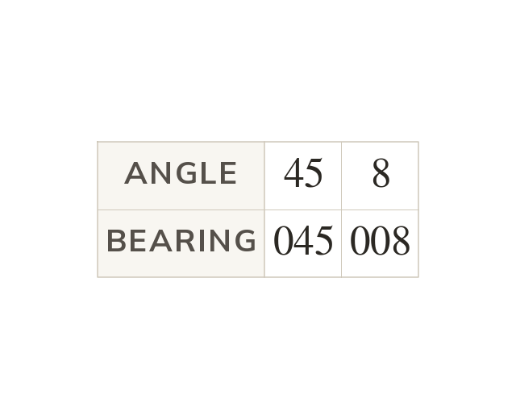

What a bearing is
A bearing is an angle measured clockwise from North, from up to
It is always written with three figures. Write as and as
A bearing describes a direction as an angle measured clockwise from North, starting at and going up to
It is always written using three figures, so an angle of is written as a bearing of and is written as
It is always written using three figures, so an angle of is written as a bearing of and is written as